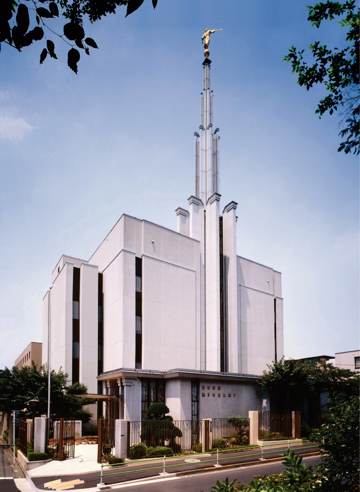
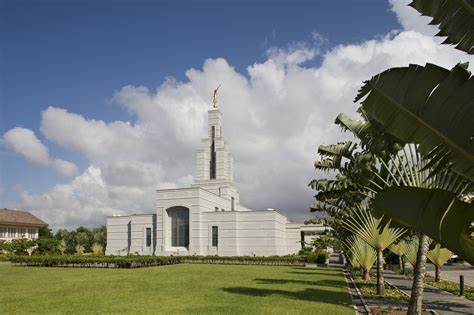
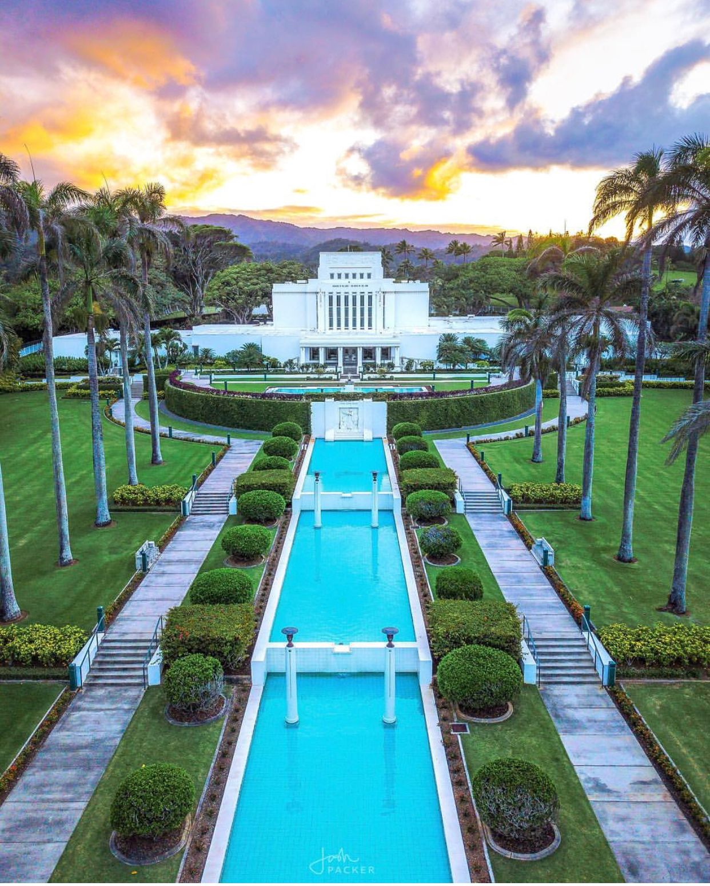
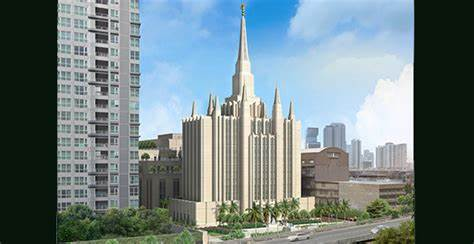
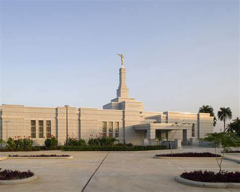
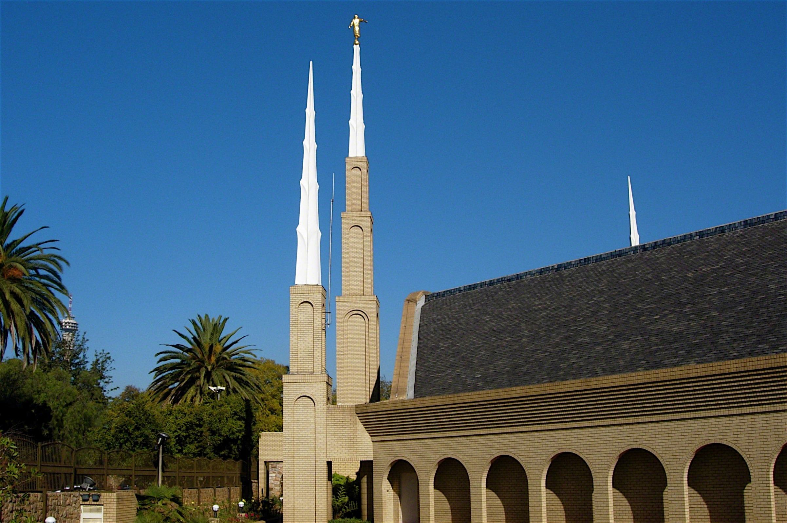

Temple Album
☰
Home
Old
New
Large
Small
Temple
Salt Lake Temple
Rome Italy Temple

Tokyo Japan Temple

Accra Ghana Temple

Laie Hawaii Temple
Paris France Temple

Bangkok Thailand Temple

Aba Nigeria Temple

Johannesburg South Africa Temple